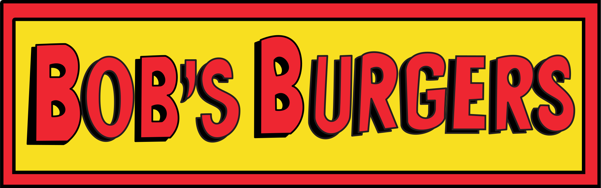

Sobre a série
Bob's Burgers é uma série de desenho animado criada por Loren Bouchard para a Fox Broadcasting Company. Sua estreia ocorreu em um domingo, 9 de janeiro de 2011. O seriado se concentra na família Belcher, que administra um restaurante especializado em venda de hambúrgueres. Atualmente, Bob's Burgers está em sua décima quarta temporada e faz parte do bloco de animações do domingo à noite da FOX.
Bob Belcher (H. Jon Benjamin), é o marido de Linda, e pai da Tina, Gene, e Louise. Ele é o proprietário de um restaurante de hambúrgueres, do qual gosta (quase) mais do que de todo o resto.
Linda Belcher (John Roberts), mulher de Bob e a mãe de Tina, Gene, e Louise. Ela fica ao lado de Bob nos bons e maus momentos e está sempre tentando experimentar coisas novas.
Tina Belcher (Dan Mintz), é a filha mais velha e a mais boba da família Belcher. Ela geralmente fala com voz monótona, trabalha meio período no restaurante e é muitas vezes a voz da razão entre os filhos Belcher. Ela está tentando se entender com sua entrada na idade adulta, e alega ter um relacionamento complicado com zumbis.
Gene Belcher(Eugene Mirman), o único filho. Ele é muito entusiasmado com quase tudo e gosta de tocar teclado. Ele frequentemente promove o restaurante usando um traje de hambúrguer e sonha um dia ser um músico famoso.
Louise Belcher (Kristen Schaal), a mais jovem Belcher. Ela gosta de fazer brincadeiras com pessoas que acredita serem estúpidas, além de prejudicar as pessoas se há dinheiro no meio. É manipuladora e tem um sentido de humor negro e sarcástico. Usa uma touca com orelhas de coelho cor de rosa.